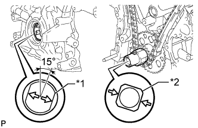
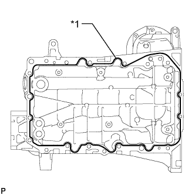
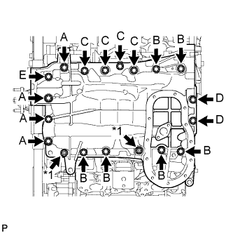
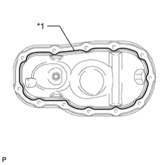
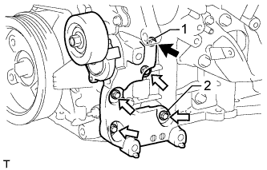

МАСЛЯНЫЙ НАСОС > УСТАНОВКА |
| 1. УСТАНОВИТЕ ПЕРЕДНИЙ САЛЬНИК КОЛЕНЧАТОГО ВАЛА |
 |
При помощи SST и молотка запрессуйте новый сальник так, чтобы его поверхность была заподлицо с краем крышки цепного привода газораспределительного механизма.
| 2. УСТАНОВИТЕ КРЫШКУ ЦЕПНОГО ПРИВОДА ГАЗОРАСПРЕДЕЛИТЕЛЬНОГО МЕХАНИЗМА В СБОРЕ |
Удалите остатки старого герметика (FIPG). Следите за тем, чтобы масло не попало на сопрягающиеся поверхности крышки цепного привода газораспределительного механизма и блока цилиндров.
| *A | Со стороны головки блока цилиндров и блока цилиндров | *B | Со стороны крышки цепного привода газораспределительного механизма |
| *a | Очистите и обезжирьте | - | - |
Нанесите на новую прокладку масляного насоса тонкий слой моторного масла.
Установите прокладку масляного насоса.
 |
Нанесите герметик, как показано на рисунке.
| *1 | Диаметр уплотнения |
 | Герметик |
Нанесите герметик в виде сплошного валика на крышку цепного привода газораспределительного механизма, как показано на рисунке.
| *a | Обязательно нанесите герметик | *b | Зона, отмеченная пунктирной линией (герметик: Фирменный герметик Seal Packing Black от компании Тойота, Three bond 1207B или аналогичный) |
| *c | Зона, отмеченная непрерывной линией (герметик: Фирменный герметик Seal Packing Black от компании Тойота, Three bond 1207B или аналогичный) | *d | Зона, отмеченная штрих-пунктирной линией (герметик: Фирменный герметик Seal Packing 1282B от компании Тойота, Three bond 1282B или аналогичный) |
| *e | Зона, отмеченная заштрихованной линией (герметик: Фирменный герметик Seal Packing Black от компании Тойота, Three bond 1207B или аналогичный) | - | - |
| Область | Диаметр валика герметика | Участки нанесения герметика с внутренней стороны |
| Зона, отмеченная непрерывной линией | не менее 4,5 мм (0,177 дюйма) | 3,0-4,0 мм (0,118-0,158 дюйма) |
| Зона, отмеченная штрих-пунктирной линией | Не менее 3,5 мм (0,138 дюйма) | 2,0 - 3,0 мм (0,0787 - 0,118 дюйма) |
| Зона, отмеченная пунктирной линией | Не менее 3,5 мм (0,138 дюйма) | 3,0 - 4,0 мм (0,118 - 0,158 дюйма) |
| Область, показанная штриховкой | не менее 6,0 мм (0,236 дюйма) | 5,0 мм (0,197 дюйма) |
|  |
Совместите шлицы ведущей шестерни масляного насоса и коленчатого вала, как показано на рисунке. Установите на ведущую шестерню и крышку цепного привода на коленчатый вал.
| *1 | Шлицы ведущей шестерни |
| *2 | Коленчатый вал |
Закрепите крышку цепного привода газораспределительного механизма 26 болтами, обозначенными A, B, C и D, и 2 гайками. Равномерно затяните болты и гайки в несколько приемов.
| Параметр / Устройство | Длина |
| болт A | 25 мм (0,984 дюйма) |
| Болт B | 55 мм (2,17 дюйма) |
| Болт C | 35 мм (1,38 дюйма) |
| Болт D | 65 мм (2,56 дюйма) |

| *1 | Гайка | - | - |
| *a | Зона 1 | *b | Зона 2 |
| *c | Зона 3 | *d | Зона 4 |
Затяните болты в зоне 1.
Затяните болты в зоне 2.
Затяните болты в зоне 3.
Затяните болты в зоне 4.
| 3. УСТАНОВИТЕ ПОДДОН КАРТЕРА В СБОРЕ |
Удалите остатки старого герметика (FIPG). Следите, чтобы масло не попало на сопряженные поверхности блока цилиндров, крышки заднего сальника и поддона картера.
Установите в крышку цепного привода газораспределительного механизма 3 новых кольцевых уплотнения.
|  |
Нанесите герметик в виде сплошного валика, как показано на рисунке.
| *1 | Герметик |
|  |
Установите поддон картера и закрепите его 17 болтами (A, B, C, D и E) и 2 гайками. Равномерно затяните болты и гайки в несколько приемов.
| Параметр / Устройство | Длина |
| Болт A | 60 мм (2,36 дюйма) |
| Болт B | 45 мм (1,77 дюйма) |
| Болт C | 25 мм (0,984 дюйма) |
| Болт D | 16 мм (0,630 дюйма) |
| Болт E | 70 мм (2,76 дюйма) |
| *1 | Гайка |
| 4. УСТАНОВИТЕ МАСЛОПРИЕМНИК С СЕТЧАТЫМ ФИЛЬТРОМ В СБОРЕ |
Установите новую прокладку и закрепите сетчатый фильтр 2 гайками.
| 5. УСТАНОВИТЕ ПОДДОН КАРТЕРА № 2 В СБОРЕ |
|  |
Нанесите герметик в виде сплошного валика, как показано на рисунке.
| *1 | Герметик |
 |
Установите масляный поддон № 2 и закрепите его 10 болтами и 2 гайками. Равномерно затяните болты и гайки в несколько приемов.
| Болт |
 | Гайка |
| 6. УСТАНОВИТЕ КРЫШКУ ГОЛОВКИ БЛОКА ЦИЛИНДРОВ В СБОРЕ |
Удалите остатки старого герметика (FIPG). Следите, чтобы масло не попало на сопрягающиеся поверхности крышки цепного привода газораспределительного механизма, головки блока цилиндров и крышки головки блока цилиндров.
 |
Нанесите герметик, как показано на рисунке.
| Герметик |
Установите 3 новые прокладки.
Установите на крышку головки блока цилиндров новую прокладку.
Установите на болты уплотнительные шайбы.
Временно закрепите крышку головки блока цилиндров 12 болтами. Равномерно затяните болты в несколько приемов.
| Параметр / Устройство | Длина |
| А | 25 мм (0,984 дюйма) |
| B | 35 мм (1,38 дюйма) |
| C | 65 мм (2,56 дюйма) |
| D | 60 мм (2,36 дюйма) |
| болт A |
| болт B |
 | болт C |
 | Болт D |
| 7. УСТАНОВИТЕ ЛЕВУЮ КРЫШКУ ГОЛОВКИ БЛОКА ЦИЛИНДРОВ В СБОРЕ |
Удалите остатки старого герметика (FIPG). Следите, чтобы масло не попало на сопрягающиеся поверхности крышки цепного привода газораспределительного механизма, головки блока цилиндров и крышки головки блока цилиндров.
 |
Нанесите герметик, как показано на рисунке.
| Герметик |
Установите 3 новые прокладки.
Установите на крышку головки блока цилиндров новую прокладку.
Установите на болты уплотнительные шайбы.
Временно закрепите крышку головки блока цилиндров 12 болтами. Равномерно затяните болты в несколько приемов.
| Параметр / Устройство | Длина |
| А | 25 мм (0,984 дюйма) |
| B | 35 мм (1,38 дюйма) |
| C | 70 мм (2,76 дюйма) |
| D | 60 мм (2,36 дюйма) |
| болт A |
| болт B |
| болт C |
| Болт D |
| 8. ПОДСОЕДИНИТЕ ТОПЛИВОПРОВОД |
Подсоедините топливопровод и закрепите его 2 болтами.
| 9. УСТАНОВИТЕ ЗАДНЮЮ КРЫШКУ ГОЛОВКИ БЛОКА ЦИЛИНДРОВ |
Временно установите крышку и закрепите ее 3 болтами.
 |
Затяните 3 болта в порядке, указанном на рисунке.
| 10. УСТАНОВИТЕ МАСЛОПРОВОД № 2 |
Убедитесь в отсутствии посторонних частиц на сетке правого фильтра гидравлического клапана изменения фаз.
Установите новую прокладку, временно установите маслопровод (со стороны головки цилиндров) и вверните болт обратного масляного клапана.
Установите правый фильтр гидравлического клапана изменения фаз на штуцер маслопровода. Установите новые прокладки и временно установите маслопровод (со стороны крышки головки).
Затяните штуцер маслопровода (со стороны головки блока цилиндров).
Затяните штуцер маслопровода (со стороны крышки головки цилиндров).
| 11. УСТАНОВИТЕ МАСЛОПРОВОД № 1 |
Убедитесь в отсутствии посторонних частиц на сетке левого фильтра гидравлического клапана изменения фаз.
Установите новую прокладку, временно установите маслопровод (со стороны головки цилиндров) и вверните болт обратного масляного клапана.
Установите левый фильтр гидравлического клапана изменения фаз на штуцер маслопровода. Установите новые прокладки и временно установите маслопровод (со стороны крышки головки).
Затяните штуцер маслопровода (со стороны головки блока цилиндров).
Затяните штуцер маслопровода (со стороны крышки головки цилиндров).
| 12. УСТАНОВИТЕ ШКИВ КОЛЕНЧАТОГО ВАЛА |
 |
Используя SST, установите шкив коленчатого вала и закрепите его установочным болтом шкива.
| 13. УСТАНОВИТЕ КРОНШТЕЙН МАСЛЯНОГО ФИЛЬТРА |
Установите кронштейн масляного фильтра с новой прокладкой и закрепите его 2 гайками и болтом.
| 14. УСТАНОВИТЕ НАТЯЖИТЕЛЬ ПОЛИКЛИНОВОГО РЕМНЯ В СБОРЕ |
|  |
Временно установите натяжитель поликлинового ремня и закрепите его 5 болтами.
| Параметр / Устройство | Длина |
| А | 70 мм (2,76 дюйма) |
| B | 33 мм (1,30 дюйма) |
| болт A |
| болт B |
Затяните болты 1 и 2 в порядке номеров.
Затяните остальные болты.
| 15. УСТАНОВИТЕ ОПОРНЫЙ РОЛИК № 2 |
Для раздельного типа:
Закрепите 2 крышки опорных роликов, 2 опорных ролика № 2 и 2 крышки опорных роликов № 2 с помощью 2 болтов.
Для интегрированного типа:
Установите 2 опорных ролика № 2 и закрепите их 2 болтами.
| 16. УСТАНОВИТЕ ОПОРНЫЙ РОЛИК № 1 |
 |
Закрепите опорный ролик № 1 болтом.
| 17. УСТАНОВИТЕ КОЖУХ ВПУСКНОГО ПАТРУБКА ОХЛАЖДАЮЩЕЙ ЖИДКОСТИ |
Подсоедините 3 перепускных шланга охлаждающей жидкости.
Смочите мыльным раствором новое кольцевое уплотнение и установите его на отводящую трубку системы охлаждения.
Установите на выпускной патрубок охлаждающей жидкости новое кольцевое уплотнение.
Установите на насос системы охлаждения новую прокладку.
Установите впускной патрубок охлаждающей жидкости и закрепите его 5 болтами.
Подсоедините 3 перепускных шланга охлаждающей жидкости.
| 18. УСТАНОВИТЕ ПЕРЕПУСКНОЙ ПАТРУБОК ОХЛАЖДАЮЩЕЙ ЖИДКОСТИ В СБОРЕ (для моделей с масляным радиатором) |
 |
Установите перепускной патрубок охлаждающей жидкости и закрепите его 3 болтами.
Подсоедините 2 шланга.
| *a | Вверх |
| *b | Назад |
| 19. УСТАНОВИТЕ ТРУБКУ ЩУПА ПРОВЕРКИ УРОВНЯ МАСЛА |
 |
Установите новое кольцевое уплотнение в держатель щупа проверки уровня масла.
| *1 | Новое кольцевое уплотнение |
Нанесите на уплотнительное кольцо тонкий слой моторного масла.
Вставьте конец направляющей щупа проверки уровня масла в отверстие для направляющей.
Закрепите трубку щупа проверки уровня масла болтом.
Установите щуп проверки уровня масла.
| 20. УСТАНОВИТЕ КАТУШКУ ЗАЖИГАНИЯ В СБОРЕ |
Установите 6 катушки зажигания и закрепите их 6 болтами.
Подсоедините разъемы 6 катушек зажигания.
| 21. УСТАНОВИТЕ КОМПЛЕКТ КЛАПАНА СИСТЕМЫ СНИЖЕНИЯ ТОКСИЧНОСТИ ОТРАБОТАВШИХ ГАЗОВ № 2 (для моделей со вспомогательной системой подачи воздуха в нейтрализатор) |
Установите комплект клапана системы снижения токсичности отработанных газов № 2 и закрепите его 3 гайками.
| 22. УСТАНОВИТЕ КОМПЛЕКТ КЛАПАНА СИСТЕМЫ СНИЖЕНИЯ ТОКСИЧНОСТИ ОТРАБОТАВШИХ ГАЗОВ (для моделей со вспомогательной системой подачи воздуха в нейтрализатор) |
Установите комплект клапана системы снижения токсичности отработанных газов и закрепите его 3 гайками.
| 23. УСТАНОВИТЕ ДВИГАТЕЛЬ В СБОРЕ |
Установите двигатель в сборе (Нажмите здесь).